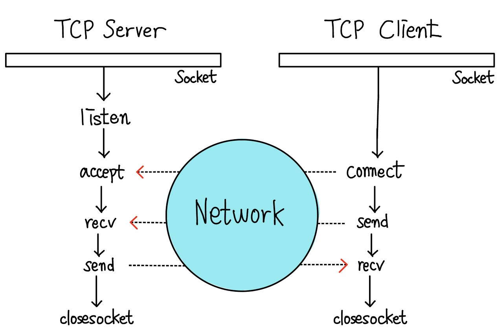

인터넷 구성요소
- 호스트, 라우터, 통신 프로토콜
패킷 전송 과정
- 프로그램 → TCP → IP → 이더넷
TCP 와 UDP
TCP
- 연결 설정 후 통신 가능
- 일대일 통신
- 데이터 경계 구분x (바이트 스트림 서비스)
UDP
- 연결 설정 없이 통신가능
- 일대일, 일대다 상관없음
- 데이터 경계 구분
소켓생성
socket(IP 타입, TCP|UDP, 0);- ip 타입
AF_INET:IPv4
AF_INET6:IPv6 - TCP:
SOCK_STREAM, UDP:SOCK_DGRAM
IPv6 사용시: AF_INET6, sockaddr_in6
TCP 소켓 처리 과정
서버
WSAStartup():소켓 초기화socket():서버 소켓 생성bind():소켓 바인딩 (소켓의 지역 IP 주소와 지역 포트 번호를 결정)listen():클라이언트 연결대기, 클라이언트 얼마나 받을건지 결정accept():클라이언트 접속 수락, 클라이언트 통신을 위한 새로운 소켓 생성send(): 메시지 보내기 &&recv(): 데이터 받기
클라이언트
WSAStartup():소켓 초기화socket():클라이언트 소켓 생성connect():서버와 연결 설정, 연결을 위한 패킷 교환send(): 메시지 보내기 &&recv(): 데이터 받기
UDP 소켓 처리과정
서버
WSAStartup():소켓 초기화socket():서버 소켓 생성bind():소켓 바인딩 (소켓의 지역 IP 주소와 지역 포트 번호를 결정)sendto(): 메시지 보내기 &&recvfrom(): 데이터 받기
클라이언트
WSAStartup():소켓 초기화socket():클라이언트 소켓 생성sendto(): 메시지 보내기 &&recvfrom(): 데이터 받기
TCP 서버 - 클라이언트 동작 원리
- 서버는 소켓을 생성, 클라이언트 대기
- 클라이언트가 서버에 접속, 연결설정을 위한 패킷 교환 (3-way handshaking 방식)
- 서버는 클라이언트와 데이터 송, 수신을 위한 새로운 소켓 생성
- 기존에 생성한 소켓은 다른 클라이언트 접속대기

UDP 서버 - 클라이언트 동작 원리
- 서버는 소캣 생성, 클라이언트가 데이터 보내길 기다림
- 클라이언트는 연결설정 없이 서버와 곧바로 데이터 주고 받음, 이때 서버는 소켓 한 게만 사용
- 아무 클라이언트가 접속해서 서버와 통신할 수 있다
TCP 메시지 경계 구분
- 항상 고정길이로 보냄
주고받을 데이터의 길이 변동폭이 크지 않을 때 적합
- 가변 데이터를 보내고 특별한 표식(EOR)을 붙임
생성 데이터의 길이를 미리 알 수 없을 때 적합
- 고정 길이 보내고 가변길이 보냄, 수신자는 고정길이 읽고, 뒤에 가변길이 알아냄
생성 데이터의 길이를 미리 알고 있는 상황에서 구현이 쉽고 처리 효율성이 높음
- 모든 가변 데이터 보내고 연결종료
한쪽에서 일방적으로 가변 길이 데이터를 보낼 때 적합
UDP 데이터 전송
- 유니캐스팅
1:1 데이터 전송
- 브로드캐스팅(IPv4)
특정 네트워크에 속한 모든 객체
- 멀티캐스팅
동일한 그룹에 속한 객체
- 애니캐스팅(IPv6)
동일한 그룹에 속한 객체 중 가장 가까운 객체
그리고 그 객체가 나머지 객체들에게 전송
브로드케스팅
- 송신자가 보낸 데이터 하나를 다수의 수신자가 받는 방식
- 소켓 생성 이후
setsockopt()함수 인자로SO_BRODCAST를 넘겨 브로드케스팅 허용
브로드케스트 주소 종류
- 네트워크 브로드 케스트
[ip].[ip].[255].[255] - 서브넷 브로드케스트
[ip].[ip].[ip].255 - 지역 브로드케스트
255.255.255.255
바이트 정렬
메모리에 데이터 저장때 바이트 배치 순서
ex) 0x12345678
빅엔디언: 0x12, 0x34, 0x56, 0x78
리틀 엔디언: 0x78, 0x56, 0x34, 0x12
- 바이트 정렬을 고려하는 경우
- IP 주소에 문제가 발생하는 상황
- 포트 번호에 문제가 발생하는 상황
- 응용 프로그램 데이터에서 문제가 발생하는 상황
멀티 쓰레딩
교착 상태 해결
- 데이터 송수신 부분 잘 설계
빠른 구현, 모든 경우 해결책x
- 소켓에 타입아웃 적용
구현 쉬움, 성능 떨어짐
- 넌블로킹 소켓 사용하기
조건 만족하지 않아도 소켓 함수 즉시 리턴으로 교착 해결, 구현복잡 && 자원낭비
- 입출력 모델 사용
넌블로킹 단점 보안, 구현복잡
생성
쓰레드 함수
DWORD WINAPI 함수명(LPVOID param){ }
쓰레드 API
CreateThread(NULL, 0, 함수명, 보낼데이터주소, 0, NULL): 쓰레드 생성
종료
- 함수 안 return
- 쓰레드 함수 내 ExitThread() 호출
- 다른 쓰레드가 TerminateThread() 호출
종료 대기
종료 대기를 위해 쓰레드 함수를 HANDLE에 메핑
HANDLE hThread = CreateThread();- 한개:
WaitForSingleObject(HANDLE 쓰레드, int 대기시간=INFINITE) - 여러개:
WaitForMultipleObjects(int 대기할개수, HANDLE *쓰레드주소, TRUE, 대기시간=INFINITE)
실행 제어
- 일시 정지:
SuspendThread(HANDLE 쓰레드)||Sleep(HANDLE 쓰레드) - 재실행:
ResumeThread(HANDLE 쓰레드) - 종료:
CloseHandle(HANDLE 쓰레드)
동기화
- [임계영역, 뮤텍스, 이벤트, 세마포어, 대기가능 타이머]
임계영역
- 두 개 이상의 스레드가 공유 자원에 접근할 때, 오직 한 스레드만 접근을 허용해야 하는 경우에 사용
//쓰레드 입장
CRITICAL_SECTION cs; //전역변수 선언
DWORD WINAPI thread() {
EnterCriticalSection(&cs);
// 공유 자원 접근
// 해당 영역이 건드는 모든 변수는 LeaveCriticalSection 를 호출하기 전까지 다른 쓰레드가 건들면 대기시켜 버림
LeaveCriticalSection(&cs);
}
// 메인 입장
main() {
EnterCriticalSection(&cs);
// 공유 자원 접근
// 해당 영역이 건드는 모든 변수는 DeleteCriticalSection 를 호출하기 전까지 다른 쓰레드가 건들면 대기시켜 버림
DeleteCriticalSection(&cs);
}이벤트
- 사건이 발생하기 전 다른 쓰레드에게 알리는 기법
- 생성
CreateEvent(NULL, FALSE, FALSE, NULL): HANDLE - 이벤트 발생
SetEvent(HANDLE 이벤트) - 이벤트 종료
ResetEvent(HANDLE 이벤트)
용어정리
소켓:전송 계층과 응용 프로그램 사이의 인터페이스 역할을 하며 떨어져 있는 두 호스트를 연결함 (전송 프로토콜, ip, 포트번호로 정의)패킷: IP주소, 포트 번호, 오류코드 + 데이터
함수 정리
WSACleanup()소켓 끝 마무리closesocket(SOCKET):소켓 종료gethostbyname(Char * 도메인):호스트 이름 → ip주소gethostbyaddr(char *ip주소, int 길이, int ip타입):ip 주소 → 호스트 이름inet_ntop(int ip타입, Char *반환할 데이터, void *담을주소):바이트 ip 주소 → 실제 ip 주소inet_pton(int ip타입, void *변환값주소, 버퍼, 길이):실제ip 주소 → 바이트 ip 주소(자료형*)malloc(sizeof(자료형)):동적 메모리 할당
(p[0], p[1]…) 이렇게 할당하는 순간 해당 하는 만큼 메모리를 할당해서 무한대로 쓸 수 있음
바이트 정렬함수
htons():2바이트 호스트 바이트 → 네트워크 바이트(빅엔디안 으로 변환)htonl():4바이트 호스트 바이트 → 네트워크 바이트(빅엔디안 으로 변환)프로그램이 소켓에 넘겨주기 전
ntohs():2바이트 네트워크 바이트 → 호스트 바이트ntohl():4바이트 네트워크 바이트 → 호스트 바이트소켓이 전송한 결과를 받아볼 때
클라이언트는 hton* 로 전송하고 서버는 ntoh* 로 받으면 됨